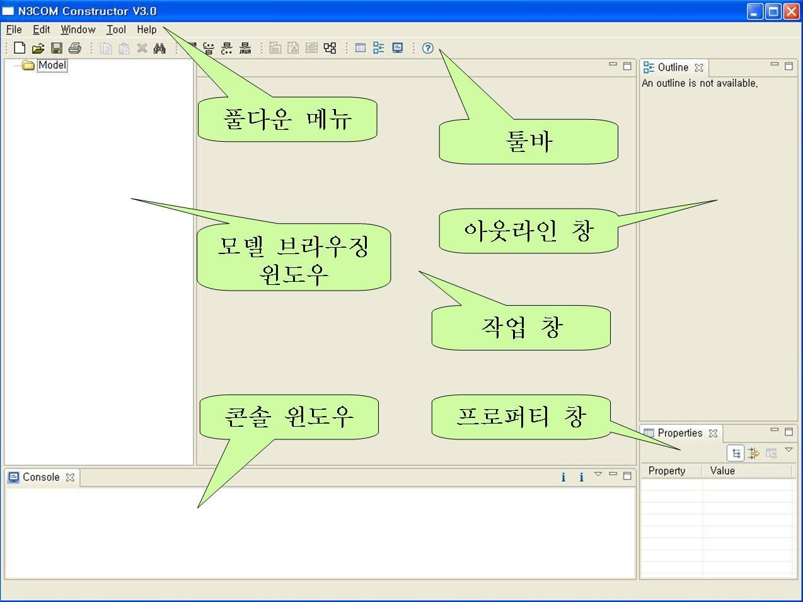

화면 구성
(그림 2.2-1)은 컴포넌트 생성 지원 도구의 초기 화면으로, 컴포넌트 생성 지원 도구 초기 화면의 GUI는 공통 풀다운 메뉴, 툴바, 브라우징 윈도우, 편집기 윈도우, 메시지 윈도우, 상태줄로 구성된다. 컴포넌트 생성 지원 도구 초기 화면의 주요 구성 요소의 기능은 다음과 같다.

그림 2.2-1 컴포넌트 생성 지원 도구의 초기 화면
- 풀다운 메뉴 - 도구 전체에서 사용되는 메뉴들이 위치한다.
- 툴바 - 도구 전체에서 자주 사용되는 기능들을 툴바에 배치하였다.
- 작업창 - 도구에서 사용되는 편집기들의 Window가 배치된다.
- 모델 브라우징 윈도우 - 프로젝트의 구조를 시각적으로 표현한다.
- 콘솔 윈도우 - 도구가 실행 중 발생하는 메시지를 표현한다.
- 아웃라인 창 - 다이어그램에 그려는 객체들 표현한다.
- 프로퍼티 창 - 선택된 객체에대한 프로퍼티를 설정할 수 있다.